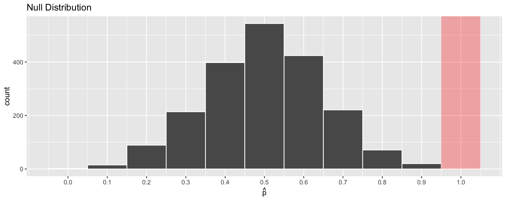

Hypothesis Testing I: Introduction
Megan Ayers
Stat 141 | Fall 2026
Wednesday, Week 9
Goals for today
- Introduce hypothesis testing framework
Introduction
Card Guessing
- I have 5 (hearts) cards from a standard deck:
- 10, Jack, Queen, King, Ace
- I’m going to shuffle the 5 cards and make a guess about which is on top, then reshuffle
- Let’s bet $20 that I can guess right 10 out of 10 times
- Discuss with Neighbor(s):
- Q: If I’m guessing at random, what’s the probability that I guess correctly on one draw?
- Q: How many times out of 10 draws would you expect me to guess correctly?
- Q: Which is the probability of guessing correctly 10 times in a row?
- \(\frac{1}{5}\) or a 20% chance
- 2 times out of 10
- \((\frac{1}{5})^{10} = 0.0000001\) or <0.001%
The guesses…
- Let’s say I do this and get 10 in a row.
- Clearly I’m cheating and you shouldn’t have to pay me $20
- But I say “Oh I just got lucky… pay me!!” … how do you prove I’m lying?
- Q: Any ideas?
- One way of doing it:
- Assume for a second that I was guessing at random
- If that’s the case, then there’s a \(<0.001\%\) chance of guessing 10 in a row correctly!
- Therefore, I must be cheating (i.e., You reject the idea that I’m guessing randomly)
- We just (informally) did a Hypothesis Test
- Framework for deciding whether or not “due to chance” is a plausible explanation
- If the event (data, sample) that we observe is extremely unlikely, “due to chance” is not a plausible explanation.
Hypothesis Tests and “P-Values”, Informally
- Say we want to disprove a hypothesis:
- e.g., “Megan was guessing randomly, and not cheating”
- We are going to calculate something called a P-value:
- Assuming the hypothesis was true…
\[ \text{P-value} = \text{Probability of what happened in reality (or something more extreme)} \]
- e.g., Assuming Megan was guessing randomly…
\[ \text{P-value} = \text{Probability guessing correctly 10 times in a row} \]
- Then we’ll reject the hypothesis if the p-value is small
Why reject with “small” p-values?
Discuss with Neighbor(s): If the “p-value”,
\[ \text{P-value} = \text{Probability of what happened in reality assuming the hypothesis is true} \]
is small, why does it make sense to reject the hypothesis?
In life, we tend to believe things that happen are pretty “typical” or “likely”… or else they wouldn’t happen!
With a small p-value, the hypothesis holding means “You’re special! You observed something really rare!”
- We usually don’t get that lucky :( So we may conclude that our hypothesis was wrong.
With a large p-value, the hypothesis holding means “Your observation meets expectations.”
- In this case, we don’t have much reason to doubt our hypothesis.
Hypothesis Testing Framework
Framework for Hypothesis Testing
Hypothesis Testing is a scientific experiment, and follows the general scientific method.
- Present research question and identify hypotheses
- Null Hypothesis (e.g., I was guessing cards randomly)
- Alternative Hypothesis (e.g., I was cheating)
- We’ll express these hypotheses mathematically, in terms of parameters
- Describe Null distribution
- What should we expect to happen if the null hypothesis is true?
- Obtain data, calculate relevant Test Statistic
- Test Statistic = sample statistic based on our data
- Calculate the P-value
- P-value = probability of observing the Test Statistic assuming the Null Hypothesis
- Use the P-value to make a conclusion on the research question
1) Identifying Hypotheses: Informal vs. Formal Hypotheses
- Before the card guessing experiment, we may have several (informal) hypotheses:
- Megan is guessing at random
- The cards are not equally likely to come up
- Megan is psychic
- Megan is not to be trusted
- Megan is able to do better than guessing at random
- But in order to compare these, it would be helpful to consider a set of hypotheses that:
- Are mutually exclusive
- Make specific statements about a parameter
- Do not discuss the specific outcome of the experiment
- Formal Hypotheses: Let \(p\) denote the true probability that a guess is correct.
\[ \textbf{Null Hypothesis:} \quad p = 1/5 \qquad \qquad \textbf{Alternative Hypothesis:} \quad p > 1/5 \]
- The first informal hypothesis is represented by Hypothesis 1. The others are represented by Hypothesis 2, summarized in the last informal hypothesis.
1) Identifying Hypotheses
- The null hypothesis (\(H_0\)) is the claim we are testing. It often represents a skeptical perspective or that there is no relationship among several variables.
- \(H_0\): The chance of guessing correctly is 1/5, or \(p=1/5\).
- The null value = value of the population parameter under the Null Hypothesis (e.g., \(1/5\))
- The alternative hypothesis (\(H_a\)) is contrary to the null hypothesis. It is often the theory we would like to prove.
- \(H_a\): Megan can do better than random guessing, or \(p>1/5\).
- The Null and Alternative hypotheses are most often statements about the particular value of a population parameter
- \(H_0\) and \(H_a\) are never statements about particular values of sample statistics. They are hypotheses and should be able to be expressed before any observation of data.
- Incorrect \(H_0\): The proportion of correct guesses in \(10\) guesses is \(\widehat{p}=1/5\).
- Incorrect \(H_a\): The proportion of correct guesses in \(10\) guesses is \(\widehat{p} > 1/5\).
- \(H_0\) and \(H_a\) are never statements about particular values of sample statistics. They are hypotheses and should be able to be expressed before any observation of data.
1) Identifying Hypotheses: Determining the Null Hypothesis
- The Null and Alternative Hypothesis statements are not interchangeable:
- Null hypothesis is (usually) a statement of equality for a parameter (e.g., \(p = 1/5\))
- Alternative hypothesis is a statement of inequality for a parameter (e.g., \(p > 1/5\))
- The null hypothesis should represent the status quo belief about the parameter.
- Would be assumed if no study were conducted, and would be maintained if the study is inconclusive.
- The alternative hypothesis often represents the claim for which we seek evidence.
- It is the only statement we will be able to provide evidence for after our test.
- e.g., in a criminal trial, we assume innocence (\(H_0\)) first. If evidence is compelling (“beyond a reasonable doubt”), then we reject in favor of a guilty verdict (\(H_a\)).
- e.g., Card guessing
- Note: Rejecting the Null doesn’t mean it’s untrue, that’s just our conclusion based on the data we have
Framework for Hypothesis Testing
Present research question and identify hypotheses
Describe “Null” distribution - What should we expect to happen due to randomness if the null hypothesis is true?
Obtain data, calculate relevant “Test Statistic”
Calculate the “P-value”
- P-value = likelihood of observing the Test Statistic or something more extreme assuming the Null Hypothesis
Use the P-value to make a conclusion on the research question
2) Describe the Null Distribution: Likelihood of Observing Sample Statistic
To compare Null and Alternate Hypotheses, we need to quantify how likely it is to observe a particular sample statistic, if the null hypothesis were true.
- If I’m guessing at random, how many correct guesses do you expect?
- What is the greatest number of correct guesses you would plausibly expect to see?
- If I had 4 correct guesses, would you think that I’m guessing at random?
- How likely is is that I would get 7 or more correct guesses, if I’m guessing at random?
To answer questions like these, we need to know the distribution of the statistic of interest, if the null hypothesis were true.
This distribution is called the Null Distribution and is the theoretical sampling distribution for the statistic if the null hypothesis were true.
We can approximate the Null Distribution using simulation or theory.
2) Describe the Null Distribution: A Model of Card Guessing
We can use R to simulate one experiment of 10 guesses by…
- Creating a data frame consisting of correct and incorrect guesses
This gives us a \(\widehat{p} = 2/10 = 0.2\)
2) Describe the Null Distribution: A Model of Card Guessing
We can use R to simulate 2000 experiments of 10 guesses by putting in reps = 2000 (reps = 1 is the default).
# A tibble: 2,000 × 3
replicate n_correct p_hat
<int> <dbl> <dbl>
1 1 2 0.2
2 2 5 0.5
3 3 1 0.1
4 4 2 0.2
5 5 0 0
6 6 3 0.3
7 7 0 0
8 8 2 0.2
9 9 1 0.1
10 10 4 0.4
# ℹ 1,990 more rows2) Describe the Null Distribution: Visualizing
- We can use a histogram to visualize the Null Distribution of the sample proportion \(\widehat{p}\)
2) Describe the Null Distribution: Visualizing
- We can use a histogram to visualize the Null Distribution of the sample proportion \(\widehat{p}\)

- Q: How often would we have observed \(\widehat{p} = 1.0\)?
Framework for Hypothesis Testing
Present research question and identify hypotheses
Describe “Null” distribution
Obtain data, calculate relevant “Test Statistic”
- Test Statistic = sample statistic based on our data
Calculate the “P-value”
- P-value = likelihood of observing the Test Statistic or something more extreme assuming the Null Hypothesis
Use the P-value to make a conclusion on the research question
3) Calculate the Test Statistic
- We’ve already done this with my card drawing:
- We found that \(\widehat{p} = 1\) (I guessed right in 10 out of 10 draws)
- In the context of hypothesis tests, we typically call the sample statistic (e.g., \(\widehat{p}\)) the Test Statistic
Framework for Hypothesis Testing
Present research question and identify hypotheses
Describe “Null” distribution
Obtain data, calculate relevant “Test Statistic”
Calculate the “P-value”
- P-value = likelihood of observing the Test Statistic or something more extreme assuming the Null Hypothesis
- Use the P-value to make a conclusion on the research question
4) Calculate the P-Value
- Reminder: Informally,
- P-value = Probability of what happened in reality (or something more extreme) assuming the hypothesis is true
- More formally,
- The p-value is the probability of observing a sample/test statistic (e.g., \(\widehat{p}\)) at least as favorable to the alternative hypothesis as the current statistic, if the null hypothesis (\(H_0\)) were true.
- e.g., I had \(\widehat{p} = 1\), so we want the probability of \(\widehat{p} = 1\) given \(H_0\)
- e.g., If I had \(\widehat{p} = 0.5\), we’d want the probability of \(\widehat{p} \geq 0.5\) given \(H_0\)
- The p-value is the probability of observing a sample/test statistic (e.g., \(\widehat{p}\)) at least as favorable to the alternative hypothesis as the current statistic, if the null hypothesis (\(H_0\)) were true.
- The p-value quantifies the strength of evidence against the Null Hypothesis.
- Smaller p-values represent stronger evidence against \(H_0\).
- \(\text{P-value} \approx 0\) means test statistic was unlikely to arise by chance, if the null hypothesis were true.
- If the p-value is “sufficiently small”, we’ll reject \(H_0\).
4) Calculate the P-Value
- Method 1: Approximate the null distribution using simulation.
- Then, calculate the proportion of simulated statistics at least as extreme as the test statistic.

4) Calculate the P-Value
- Method 2: We use theory-based tools to create the theoretical null distribution.
- Then use the model to calculate the theoretical probability of observing a sample statistic as extreme as the test statistic.
- In the case where I get all 10 guesses right, we have already calculated the p-value as:
\[\text{P-value} = (1/5)^{10} \approx 0.0000001 \]
Framework for Hypothesis Testing
Present research question and identify hypotheses
Describe “Null” distribution
Obtain data, calculate relevant “Test Statistic”
Calculate the “P-value”
- P-value = likelihood of observing the Test Statistic or something more extreme assuming the Null Hypothesis
- Use the P-value to make a conclusion on the research question
5) Making a conclusion using the P-value
\[ \textbf{Null Hypothesis:} \quad p = 1/5 \qquad \qquad \textbf{Alternative Hypothesis:} \quad p > 1/5 \]
Discuss with Neighbor(s):
When \(\widehat{p} = 1\) (Megan guesses all 10 cards correctly), we found P-value \(\approx 0\). Do we reject the Null Hypothesis under this framework? Why?
Hypothetically, a \(\widehat{p} = 0.5\) gives P-value \(\approx 0.04\). Do we reject the Null now? Why or why not?
Answers:
Yes, we’re rejecting the Null
Probably, but we don’t feel good about it!
- How small a p-value is small enough to reject the Null?
- It really depends on your setting… (and we’ll discuss more later)
- … but people like to reject under 0.05 (this should NOT always be the rule!)
Another Application: Parkinson’s Disease
Joy Milne, a retired nurse, claimed to have the ability to smell whether someone had Parkinson’s disease. She noticed a change in her husband’s smell 10 years before he was diagnosed with Parkinson’s disease. When first attending a support group for people with Parkinson’s with her husband, she immediately recognized the same smell from many other people in the room.
To test Joy’s claim, researchers gave her 12 shirts, where half were worn by individuals who had Parkinson’s disease, and half worn by individuals who did not. She identified 11 out of 12 correctly.
Let’s walk through the five steps of hypothesis testing together to determine whether or not we think Joy’s claim is credible.
Recap: Framework for Hypothesis Testing
Hypothesis Testing is a scientific experiment, and follows the general scientific method.
- Present research question and identify hypotheses
- Null Hypothesis (e.g., I was guessing cards randomly)
- Alternative Hypothesis (e.g., I was cheating)
- We’ll express these hypotheses mathematically, in terms of parameters
- Describe Null distribution
- What should we expect to happen if the null hypothesis is true?
- Obtain data, calculate relevant Test Statistic
- Test Statistic = sample statistic based on our data
- Calculate the P-value
- P-value = probability of observing the Test Statistic assuming the Null Hypothesis
- Use the P-value to make a conclusion on the research question
Next time
- More hypothesis testing!
- Practice framing research questions in the hypothesis testing framework
- 1-sided vs 2-sided tests